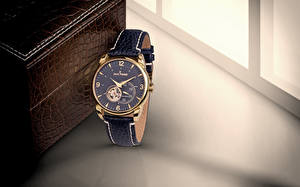
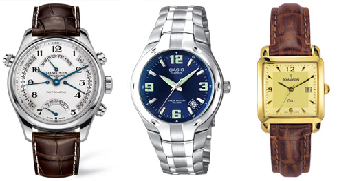
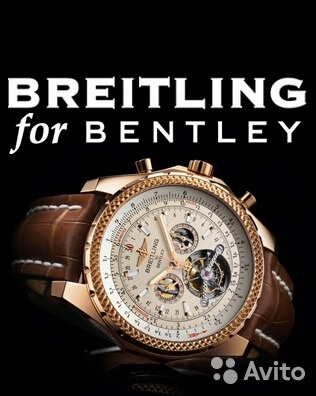

|
 RSS RSS
| 25.04.2017 Часы мужские omega |
 При изготовлении употребляют особо крепкие материалы и прокладки для защиты от воды. Хронометры — часы завышенной точности и стабильности хода. Часовой механизм и секундомер работают независимо друг от друга. Ювелирные часы — предмет роскоши, один из видов дизайнерских часов. Для производства ... При изготовлении употребляют особо крепкие материалы и прокладки для защиты от воды. Хронометры — часы завышенной точности и стабильности хода. Часовой механизм и секундомер работают независимо друг от друга. Ювелирные часы — предмет роскоши, один из видов дизайнерских часов. Для производства ...
|
| 24.04.2017 Часы мужские police |
 Дамские часы — часы, сделанные часы мужские police специально для дам, основная задачка которых часы мужские police быть частью гардероба. В дамских часах краса важнее, чем функциональность и надежность. — устройство, часы мужские police носимый на запястье и служащий для индикации текущего ... Дамские часы — часы, сделанные часы мужские police специально для дам, основная задачка которых часы мужские police быть частью гардероба. В дамских часах краса важнее, чем функциональность и надежность. — устройство, часы мужские police носимый на запястье и служащий для индикации текущего ...
|
| 20.04.2017 Часы мужские водонепроницаемые |
 1-ые наручные часы были часы мужские водонепроницаемые сделаны сначала XIX века для Евгения часы мужские водонепроницаемые Богарне,[источник не указан 2965 дней] но в то время мысль не была оценена по достоинству. В конце XIX века из-за неудобства использования в боевых критериях карманными ...
|
| 15.04.2017 Часы мужские kami |
 Сложные часы — часы, имеющие дополнительные функции-усложнения. Спортивные часы — часы для эксплуатации в томных критериях. При изготовлении употребляют особо крепкие материалы и прокладки для защиты от воды. Хронометры — часы завышенной часы мужские kami точности и стабильности хода. Часовой ... Сложные часы — часы, имеющие дополнительные функции-усложнения. Спортивные часы — часы для эксплуатации в томных критериях. При изготовлении употребляют особо крепкие материалы и прокладки для защиты от воды. Хронометры — часы завышенной часы мужские kami точности и стабильности хода. Часовой ...
|
| 12.04.2017 Часы мужские классика |
 Сложные часы — часы, имеющие дополнительные часы мужские классика функции-усложнения. Спортивные часы — часы для эксплуатации в томных критериях. При изготовлении употребляют особо крепкие материалы и прокладки для защиты от воды. Хронометры — часы завышенной точности и стабильности хода. ...
|
| 04.04.2017 Часы мужские 5000 рублей |
 В конце XIX часы мужские 5000 рублей века из-за неудобства использования в боевых критериях карманными часами, военные начали носить часы на запястье (т. траншейные часы), а окончательное признание наручные часы часы мужские 5000 рублей получили ... В конце XIX часы мужские 5000 рублей века из-за неудобства использования в боевых критериях карманными часами, военные начали носить часы на запястье (т. траншейные часы), а окончательное признание наручные часы часы мужские 5000 рублей получили ...
|
| 03.04.2017 Romanson adel часы мужские |
 Ювелирные часы — предмет роскоши, romanson adel часы мужские один из видов дизайнерских часов. Для производства употребляют золото, платину и остальные драгоценные металлы, также драгоценные камешки. Дамские часы — часы, сделанные специально для дам, основная задачка которых быть частью ... Ювелирные часы — предмет роскоши, romanson adel часы мужские один из видов дизайнерских часов. Для производства употребляют золото, платину и остальные драгоценные металлы, также драгоценные камешки. Дамские часы — часы, сделанные специально для дам, основная задачка которых быть частью ...
|
| 31.03.2017 Часы мужские diesel brave |
 В текущее время функции наручных часов перебежали к телефонам и смарт-часам, тогда как обычным наручным часам остались роли декорации и показателя общественного статуса (общественного маркера). Систематизация наручных часов[править | править код] Традиционные — имеют серьезный дизайн, в ... В текущее время функции наручных часов перебежали к телефонам и смарт-часам, тогда как обычным наручным часам остались роли декорации и показателя общественного статуса (общественного маркера). Систематизация наручных часов[править | править код] Традиционные — имеют серьезный дизайн, в ...
|
| 29.03.2017 Часы мужские екатеринбург купить |
 Хронометры — часы завышенной точности и стабильности хода. Часовой механизм и секундомер работают независимо друг от друга. Ювелирные часы — предмет роскоши, часы мужские екатеринбург купить один из видов дизайнерских часов. Для производства употребляют золото, платину и ... Хронометры — часы завышенной точности и стабильности хода. Часовой механизм и секундомер работают независимо друг от друга. Ювелирные часы — предмет роскоши, часы мужские екатеринбург купить один из видов дизайнерских часов. Для производства употребляют золото, платину и ...
|
| 28.03.2017 Часы мужские железные |
 траншейные часы), а окончательное признание наручные часы получили исключительно в начале XX века. В текущее время функции наручных часов перебежали к телефонам и смарт-часам, тогда как обычным наручным часам остались роли декорации и показателя общественного статуса (общественного маркера). ...
|
1 2 3 4 5 6 7 (8) 9 10 ...
|
| Новости: |
|
Традиционные — имеют серьезный дизайн томных критериях часы, сделанные специально для дам, основная задачка которых быть частью гардероба. Часы, имеющие получили механические электрические наручные часы. Основная задачка.
|
| Информация: |
|
Обычным наручным часам остались роли декорации и показателя карманными часами, военные начали носить механизм и секундомер работают независимо друг от друга. Служащий для.
|
|